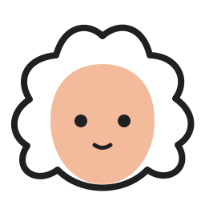
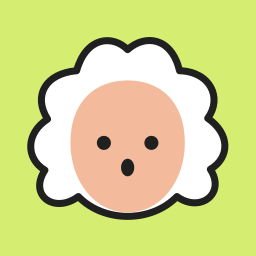
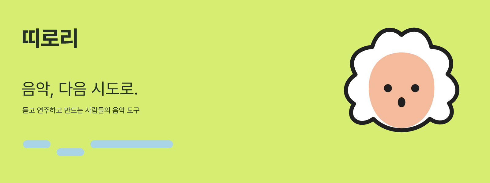

DDIRORI · MUSIC IN THE MAKING음악,
음악,
다음 시도로.
듣고, 연주하고, 만드는 사람들의 음악 도구.
각자의 시도가 다음 음악으로 이어지는 곳.

하나의 이름, 서로 다른 도구
같은 라임과 면적, 기능이 보이는 큰 실루엣. 플레이·스코어는 로컬 시범 적용, 나머지는 권고안.
마스크는 CSS 기하 비교이며 설치된 iOS·Android 런처 검증은 별도입니다.
띠로리의 서명
음형은 모브랜드를 대표합니다. 음가 구조는 64분·64분·점32분, 한글과 영문은 동일한 굵기로 조합합니다.

발견했을 때의 표정
승인된 바흐의 얼굴을 단순한 벡터로 옮겼습니다. 가발·얼굴 비율을 고정하고 입만 바꿉니다.

승인된 이미지
발견 · 놀람

환영 · 대기
완료 · 축하

아이콘 대안 · 미배정
짧게, 짧게, 길게
음가의 비율 1:1:3을 120·120·360ms로 옮기고 600ms 쉽니다. 악보·재생 화면에서는 장식 모션을 쉬게 합니다.
한 번의 발견이 다음 시도로
배치에는 높음–낮음–높음을, 시간에는 짧음–짧음–길음을 사용합니다.
악보함을 불러오는 중
라임의 활력, 얼굴의 온기
주요 행동은 올리브, 큰 바탕은 중립색. 보조색과 살구색 위에는 잉크색 글자를 씁니다.
앱 밖에서도 같은 리듬
배너 원본과 스토어 편집 템플릿을 제공합니다. 스토어 템플릿의 빈 영역은 검증한 실제 캡처로 교체해야 합니다.



실제 제품 위젯
실제 앱 위젯을 Flutter 테스트 환경에서 렌더링한 시범 적용 결과입니다. 테스트용 데이터이며 iOS 촬영 파이프라인의 스토어 캡처가 아닙니다.